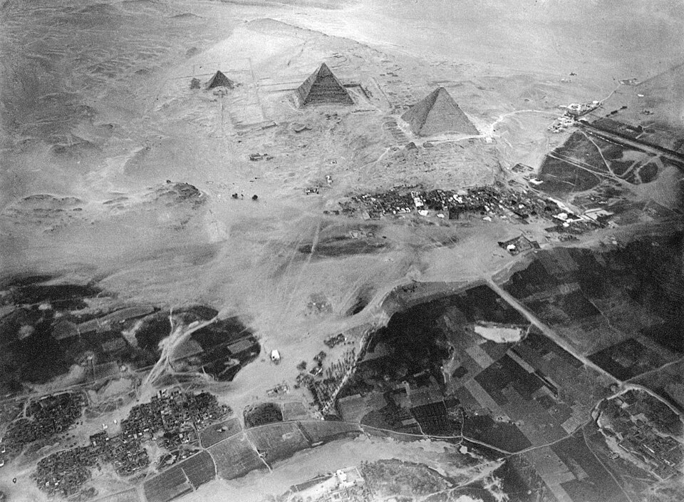

人类百年史
孔子与佛陀生活在同一时代；秦修长城时，亚历山大正在东征；
当郑和的宝船驶入印度洋，欧洲还在黑暗中世纪摸索。
百年，是文明的长河中我们唯一能真切感知的尺度。
在漫长的史前岁月里，人类以几十人为一群，游猎于荒野。大约一万年前，在底格里斯河与幼发拉底河之间的新月沃地，一个叫"纳吐夫"的人群开始做一件前所未有的事：他们不再四处追逐野兽，而是定居下来，在固定的土地上播撒种子。
农业革命——这或许是人类历史上最伟大的单次转变。它让人类有了多余的粮食，有了村庄，有了分工，有了私有财产，最终有了文明。杰里科（Jericho），这个世界上最古老的持续有人居住的城市，早在公元前 9000 年就已有了城墙和塔楼——比埃及金字塔早了六千多年。
当苏美尔人在乌鲁克城邦刻下第一批楔形文字时（约公元前 3200 年），人类历史的帷幕才真正拉开。文字让知识跨越世代，让国家超越口头记忆。几乎同时，在尼罗河畔，上埃及的法老纳尔迈（Narmer）统一了上下埃及——古埃及文明的纪元开始了。
第一幕 · 青铜时代的诸文明
前 26 世纪（约公元前 2560 年） — 在尼罗河西岸的吉萨，数万名劳工花了二十多年时间，将大约 230 万块石灰岩垒成一座高达 146.5 米的巨塔。胡夫金字塔建成，成为人类有史以来最高的建筑——这个记录保持了将近四千年，直到 19 世纪欧洲的教堂尖顶才超越它。远在千里之外的印度河流域，哈拉帕和摩亨佐-达罗两座城市正以令人惊叹的城市规划展开：笔直的街道、标准化的砖块、先进的排水系统——它们的文明程度丝毫不逊于埃及和美索不达米亚。
前 18 世纪（约公元前 1754 年） — 巴比伦国王汉谟拉比颁布了人类历史上第一部保存完整的法典。282 条法律刻在一根高 2.25 米的黑色玄武岩石柱上，"以眼还眼，以牙还牙"从此进入人类的法律语言。而在世界的另一端，中国黄河流域的商王朝正在兴起——甲骨文中的记载表明，商朝人已经掌握了精密的青铜铸造技术和成熟的文字系统。

前 12 世纪（约公元前 1200 — 前 1100 年） — 整个东地中海世界在一场史无前例的崩溃中陷入黑暗。神秘的"海上民族"从不知何处涌来，赫梯帝国灰飞烟灭，迈锡尼文明的宫殿被焚毁，特洛伊战争的故事被从此流传。埃及虽然击退了入侵者，但元气大伤。青铜时代像一个华丽的泡沫般破碎了，人类进入了铁器时代——铁的冶炼技术在公元前 1200 年左右从小亚细亚扩散开来。
与此同时，在遥远的中国，周武王在牧野之战中击败了商纣王，建立了延续八百年的周朝。周公旦制礼作乐，确立了宗法制度和分封体制——这套制度影响了此后三千年的中国政治结构。
🌏 东方
约前 1046 年：周灭商。周公制礼，奠定华夏文明的基本伦理框架
🌍 西方
约前 1200 年：青铜时代大崩溃。迈锡尼、赫梯、新王国埃及相继衰落
第二幕 · 轴心时代
历史学家雅斯贝尔斯将公元前 800 年到前 200 年称为"轴心时代"——在这短短六百年间，人类历史上最伟大的思想家几乎同时出现在世界的不同角落，他们的思想至今仍在定义着我们的文明。
前 6 世纪 — 公元前 563 年左右，释迦牟尼·悉达多诞生于尼泊尔南部的蓝毗尼园；几乎同时，孔丘在山东曲阜开始周游列国，讲述"仁者爱人"之道；远在爱琴海东岸的米利都，泰勒斯正在追问"世界的本原是什么"——他给出的答案是"水"，这个简单的问题开启了西方哲学的传统。而在波斯高原，琐罗亚斯德的二元论神学正在塑造一个后来影响犹太教、基督教和伊斯兰教的宗教宇宙观。
前 5 世纪 — 公元前 490 年，波斯帝国大流士一世的舰队在马拉松平原被雅典人击败。一位名叫菲迪皮德斯的士兵跑回雅典报捷，然后倒地死去——马拉松的传说由此诞生。仅仅十年后（前 480 年），温泉关的三百斯巴达人在列奥尼达带领下全军覆没，但他们的牺牲为希腊舰队赢得了时间，雅典最终在萨拉米斯海战中摧毁了波斯舰队。这场希波战争不仅塑造了"希腊 vs 东方"的叙事，更催生了雅典的黄金时代：伯里克利修建了帕特农神庙，索福克勒斯写下了《俄狄浦斯王》，苏格拉底在广场上追问"什么是正义"。
「己所不欲，勿施于人。」
前 4 世纪（约公元前 336-323 年） — 一个 20 岁的年轻人在马其顿即位。在不到十三年的时间里，亚历山大大帝率军穿越了从小亚细亚到印度河的万里征途，征服了当时已知世界的绝大部分地区。他曾建立了一个横跨欧亚非三大洲的帝国——虽然它在他死后迅速分裂，但希腊化时代（Hellenistic Age）由此开始：希腊语成为东地中海世界的通用语，从埃及的亚历山大港到阿富汗的艾伊·哈努姆，图书馆、体育馆和剧场如雨后春笋般涌现。
前 3 世纪（公元前 221 年） — 当亚历山大的继承者们在东方相互厮杀时，中国西部一个叫"秦"的王国在商鞅变法后迅速崛起。公元前 221 年，秦王嬴政灭掉了最后一个对手齐国，自称"始皇帝"——希望自己的帝国能"二世、三世至于万世，传之无穷"。他统一了文字、度量衡、货币，修建了最初的万里长城。然而秦朝的严刑峻法导致民怨沸腾，仅仅十四年后便土崩瓦解。
几乎同时，在印度，阿育王（Ashoka）统一了印度次大陆的绝大部分。但在经历了征服羯陵伽（Kalinga）的血腥战争后，他幡然悔悟，皈依佛教，并在全国树立石柱刻下诏令——"达摩"（Dharma）的治理理念由此生根。
第三幕 · 古典帝国的全盛与衰落
前 2 世纪（约公元前 138 年） — 汉朝皇帝汉武帝派遣张骞出使西域。这位探险家历经十三年的艰险，虽未达成最初的外交目标，却带回了一个震惊中土的消息：在遥远的西方，有一个叫"大秦"的强大国家（其实是罗马帝国）。这条由张骞"凿空"的通道后来被称为"丝绸之路"，成为连接东西方文明的大动脉。丝绸、香料、玻璃、马匹、宗教、疾病——一切沿着这条路传播。
在丝路的另一端，罗马经过三次布匿战争灭亡了迦太基（公元前 146 年），又征服了希腊。公元前 44 年 3 月 15 日，元老院中六十多名元老刺死了终身独裁官凯撒——这是历史上最著名的暗杀之一。凯撒的养子屋大维最终击败了所有对手，在公元前 27 年接受了"奥古斯都"的称号，罗马共和国正式转变为帝国。接下来的两个世纪（"罗马和平"Pax Romana时期），罗马帝国进入全盛：从英格兰的哈德良长城到叙利亚的幼发拉底河，一条条罗马大道连接起帝国的每一个角落，统一的罗马法体系为后世欧洲法律奠定了基础。
1 世纪 — 在帝国东方的犹太行省，一位名叫耶稣的犹太木匠开始布道。他被罗马总督本丢·彼拉多以"犹太人的王"的罪名钉死在十字架上（约公元 30 年）。他的门徒们坚信他死后复活，而这个信念最终——在几百年后——彻底改变了西方世界。
2 世纪（公元 105 年） — 在汉朝的宫廷里，宦官蔡伦用树皮、麻头、破布和渔网制造出了改进型的纸张。造纸术虽然早在西汉就已萌芽，但蔡伦的改良让纸张变得足够便宜而实用——这项技术在一千年后才传到欧洲，间接催生了后来的文艺复兴和宗教改革。
3 世纪 — 汉朝在持续了四百年后终于崩溃，中国陷入了三国混战的局面。曹操、刘备、孙权逐鹿中原，这段历史后来被罗贯中写成了中国最著名的小说《三国演义》。在西方，罗马帝国也陷入了三世纪危机：短短五十年内换了二十多位皇帝，瘟疫、内战、蛮族入侵让帝国濒临崩溃。
4 世纪 — 公元 312 年，罗马皇帝君士坦丁在米尔维安桥战役中声称看到了十字架异象。他随后颁布米兰敕令（313 年），使基督教合法化，他自己也在临终前接受了洗礼。基督教从此从一个被迫害的地下宗教变成了帝国的国教。公元 395 年，罗马帝国永久分裂为东西两部分——西罗马帝国以罗马为都，东罗马帝国以君士坦丁堡为都。
5 世纪（公元 476 年） — 西罗马帝国最后一个皇帝罗慕路斯·奥古斯都被日耳曼将军奥多亚塞废黜。这个事件被后人视为"古代"与"中世纪"的分界线。在一百多年的时间里，罗马帝国消失了，欧洲陷入了诸侯割据的时代——但东罗马帝国（拜占庭）将继续存在一千年。
距今的回望
公元 476 年西罗马帝国灭亡时，中国正处于南北朝时期，距离隋朝统一还有 13 年。罗马与汉朝——这两个构成世界历史叙事主轴的大帝国——它们的盛衰似乎总是隔着一两个世纪的时差，却又如此相似。
第四幕 · 中古世界
7 世纪（公元 622 年） — 在阿拉伯半岛的麦加，商人兼先知穆罕默德因受到迫害而逃往麦地那——这次迁徙被称为"希吉拉"（Hegira），标志着伊斯兰历的元年。穆罕默德去世后不到一个世纪，阿拉伯骑兵已经席卷了从西班牙到中亚的广阔疆域，建立了一个比罗马帝国还大的帝国。伊斯兰文明迅速吸收了希腊哲学、印度数学和波斯行政制度，在巴格达的"智慧宫"中展开了百年翻译运动——亚里士多德、托勒密和盖伦的著作通过阿拉伯文保存下来，后来重回欧洲，催生了拉丁西方的学术复兴。
在世界的另一端，唐朝正经历着它的全盛期。公元 626 年,"玄武门之变"后，李世民即位为唐太宗，开创了"贞观之治"——一个以轻徭薄赋、律令严明著称的黄金时代。长安城成为当时世界上最大的城市，人口超过百万，来自波斯、粟特、突厥和日本的商人与留学生挤满了西市的街头。公元 751 年，唐军在怛罗斯之战中败给阿拉伯帝国，造纸术由此传入伊斯兰世界，再传入欧洲。
8 世纪（公元 800 年） — 圣诞节那一天，法兰克国王查理曼在罗马被教皇加冕为"罗马人的皇帝"。虽然查理曼帝国在他死后就分裂了，但这个加冕事件奠定了"神圣罗马帝国"的基础，也标志着中世纪欧洲的教皇与皇帝之间长达千年的权力博弈的开始。
11 世纪（公元 1066 年） — 诺曼底公爵威廉在黑斯廷斯之战中击败了英格兰国王哈罗德，诺曼人征服了英格兰。这场战役的一次小小的胜利，深刻地改变了英语——法语词汇大量涌入，英语从此变成了一种混杂着日耳曼和拉丁两种血统的语言。
13 世纪（公元 1206 年） — 在蒙古高原上的斡难河畔，铁木真被各部落推举为"成吉思汗"（意为"海洋般的大汗"）。这位出身卑微的蒙古领袖组织了一支堪称中世纪最强大的军事机器：高度机动的骑兵、严密的十户编制和冷酷的战术。到 1227 年他去世时，蒙古帝国已经从太平洋延伸到里海——这是人类历史上面积最大的连续帝国。他的孙子忽必烈后来灭掉南宋（1279 年），建立了元朝，整个中国第一次被外族完全征服。
但在宋朝灭亡前的三百年里，中国经历了一场前所未有的经济和文化繁荣。北宋的首都开封人口超过百万，繁华程度远胜同时代的巴黎或伦敦。活字印刷术（毕昇，1040 年代）、罗盘用于航海、火药用于战争——宋代的三大发明后来通过蒙古人和阿拉伯人传入欧洲，为欧洲的近代化提供了技术基础。
「人生自古谁无死，留取丹心照汗青。」
14 世纪中叶 — 1347 年秋天，热那亚人的商船从克里米亚的卡法城驶回西西里的墨西拿港。船上水手大多已死去，幸存者身上布满黑色肿块——这是鼠疫的致命标志。短短几个月内，黑死病沿着贸易路线席卷了整个欧洲。
在接下来的四年里，欧洲失去了约 2500 万人口——占全欧人口的三分之一到一半。佛罗伦萨的居民减少了一半以上，薄伽丘的《十日谈》正是在这场灾难中构思出来的——一群年轻人逃到乡间别墅，每人每天讲一个故事来消磨时间。这场灾难深刻地改变了欧洲：劳动力短缺导致农奴制崩溃，幸存的劳动者获得了更高的工资和更多的自由；幸存者们在悲痛之余开始质疑教会的权威——"为什么上帝没有拯救我们？"
数字的力量
黑死病导致欧洲人口从约 7500 万骤降至 4500 万。在英格兰，约 40% 的神职人员死于瘟疫。这场大疫的后续影响包括：工资上涨 50-100%，封建庄园制逐渐瓦解，为后来的文艺复兴和宗教改革铺平了道路。
第五幕 · 大发现时代
15 世纪 — 当欧洲还在黑死病的余波中喘息时，古老的中国派出了一支令世界为之侧目的舰队。1405 年至 1433 年间，明朝太监郑和七次率领由数百艘船只组成的庞大舰队穿越印度洋，最远到达非洲东海岸的蒙巴萨和索马里——比达·伽马早近 70 年。郑和的宝船据说长达 140 米，相当于哥伦布旗舰的五倍。然而明朝在 1433 年突然终止了下西洋活动，远洋文献也遭到销毁，中国从此退出了海洋竞争。
几乎同时，欧洲的大航海时代拉开了序幕。1453 年，奥斯曼土耳其苏丹穆罕默德二世攻陷了君士坦丁堡——拜占庭帝国的千年历史终结了。土耳其人的火炮轰开了狄奥多西城墙，希腊学者带着古代手稿逃亡意大利，间接催生了文艺复兴。同年，百年战争结束，英法两国各自迈向了现代民族国家之路。
1492 年 10 月 12 日 — 热那亚水手克里斯托弗·哥伦布在西班牙女王的资助下到达了巴哈马群岛。他至死都相信自己是到了亚洲，但事实上他"发现"了一个欧洲人此前完全不知道的新大陆。这件事的后果是戏剧性的：西班牙人在几十年内征服了阿兹特克帝国（1519-1521 年，埃尔南·科尔特斯）和印加帝国（1532 年，弗朗西斯科·皮萨罗），从美洲掠夺了巨量的黄金和白银。与此同时，美洲的土豆、玉米和番茄传入欧亚大陆，彻底改变了全球农业结构和人口分布。
同样在 15 世纪，古腾堡在美因茨发明了活字印刷机（约 1450 年）。到 1500 年，欧洲已有超过 2000 万册书籍在流通。知识从此不再是教士和贵族的特权。
1517 年 10 月 31 日 — 维滕堡大学的神学教授马丁·路德将《九十五条论纲》钉在城堡教堂的门上，公开批判教廷出售"赎罪券"的行为。这一举动像火花落入了火药桶——得益于印刷机的快速传播，他的主张在几个星期内传遍了德国，几个月内传遍了欧洲。宗教改革爆发了。
1543 年 — 天文学家哥白尼在临终前出版了《天体运行论》，提出了一个颠覆性的理论：不是太阳绕着地球转，而是地球绕着太阳转。这个"日心说"挑战了罗马教廷的宇宙观，也为后来伽利略和牛顿的科学革命奠定了基础。
1588 年 — 西班牙无敌舰队被英格兰舰队和暴风雨击败——这是西班牙海上霸权的转折点，也是大英帝国崛起的先声。在同一时期的伦敦，一个名叫威廉·莎士比亚的剧作家开始在环球剧场演出——他写的《哈姆雷特》《罗密欧与朱丽叶》《麦克白》后来成为英语文学的巅峰之作。
1618-1648 年 — 三十年战争席卷了中欧，这是宗教改革后的第一场全欧洲大战，也是人类历史上最惨烈的战争之一（德意志人口损失约 30%）。1648 年的《威斯特伐利亚和约》确立了现代国家主权原则——国家无论大小，其领土和主权不受干涉——这一原则至今仍是国际法的基石。
同一时期，中国的明朝在经历了农民起义的连番打击后，于 1644 年被李自成的军队攻破北京，崇祯皇帝在煤山上吊自尽。满清军队随即入关，建立了清朝——中国最后一个封建王朝。
🌏 明末中国
1644 年崇祯自缢，清军入关。延续 276 年的大明帝国终结，满清建立
🌍 欧洲新秩序
1648 年《威斯特伐利亚和约》结束三十年战争，现代国际体系诞生
1687 年 — 艾萨克·牛顿出版了《自然哲学的数学原理》。在这部改变世界的著作中，他用数学公式描述了万有引力和三大运动定律——宇宙第一次被证明遵循统一的物理法则。牛顿的工作标志着科学革命的高峰，也深深影响了启蒙思想家们：既然自然界遵循理性法则，那么人类社会是否也可以被理性地设计和改进？
18 世纪 — 在巴黎的沙龙里，伏尔泰、卢梭、狄德罗和孟德斯鸠等哲学家正在讨论"社会契约""三权分立"和"天赋人权"。这些在旧制度下的咖啡馆里谈笑风生的思想，即将撼动欧洲的王座。1751 年，狄德罗开始出版《百科全书》，试图将所有人类知识汇于一炉——这是印刷时代维基百科式的雄心。
1769 年 — 格拉斯哥大学的仪器制造师詹姆斯·瓦特改进了纽科门蒸汽机，加装了独立的冷凝器。这台更好的蒸汽机不仅用于煤矿抽水，更开始驱动棉纺厂、火车和轮船。工业革命的引擎点火了。在短短几十年里，英国的纺织产量增长了几十倍，铁路网把全国连接在一起，城市以前所未有的速度膨胀——曼彻斯特从一个小镇变成了"棉都"。
「人生而自由，却无往不在枷锁之中。」
1776 年 7 月 4 日 — 费城的第二次大陆会议上，托马斯·杰斐逊起草的《独立宣言》被通过。"我们认为这些真理是不言而喻的：人人生而平等，造物者赋予他们若干不可剥夺的权利……"这个建立在启蒙思想基础上的新国家——美利坚合众国——成为了现代民主实验的舞台。
1789 年 7 月 14 日 — 巴黎的民众攻陷了巴士底狱。法国大革命爆发了。"自由、平等、博爱"的口号响彻巴黎街头。国王路易十六上了断头台，贵族特权被废除，革命军队以"民族国家"的名义抗击整个欧洲的封建联军。虽然革命后期走向了雅各宾派的恐怖统治（1793-1794 年，约 4 万人被斩首），但法国大革命还是不可逆转地改变了世界——它证明了人民有权推翻不公正的政权。
第六幕 · 革命的世纪
19 世纪最初十年 — 拿破仑·波拿巴的名字让整个欧洲颤抖。这位身材矮小的科西嘉军人凭借卓越的军事天才和政治手腕，在 1804 年加冕为法兰西皇帝，并在随后的十年中将他的军队推进到莫斯科城下。1815 年 6 月 18 日，滑铁卢的泥泞田野上，拿破仑的帝国梦彻底破碎。但他的影响是深远的：他推行《拿破仑法典》，将革命理念（法律面前人人平等、财产权神圣）固定为法律，影响了整个欧洲大陆的法治进程。
1825 年 — 乔治·斯蒂芬森的"旅行号"（Locomotion No. 1）在斯托克顿-达灵顿铁路上首次运行。火车时代的序幕拉开了。到 19 世纪中叶，铁路像蜘蛛网一样覆盖了欧洲和北美——时间开始被标准化，"火车时刻表"催生了统一的时区制度。
1848 年 — "人民之春"席卷了整个欧洲。从巴黎到维也纳，从柏林到布达佩斯，工人阶级和自由主义者在街垒后面与旧秩序对抗。虽然大多数革命在一年内被镇压，但 1848 年的精神——《共产党宣言》在这一年出版——和民族主义浪潮已经不可能被遏止。
1859 年 11 月 24 日 — 查尔斯·达尔文出版了《物种起源》，提出了以自然选择为基础的进化论。这个理论引发了科学与宗教之间的激烈辩论——人类不再是上帝的特殊创造，而是漫长进化过程的一部分。直到今天，进化论仍然是现代生物学的基石。
1861-1865 年 — 美国内战（南北战争）以北方胜利告终。奴隶制在法律上被废除，但种族问题远未解决。亚伯拉罕·林肯在葛底斯堡演说中提到的"民有、民治、民享的政府"成为民主理念的代表性表达。在同十年里（1868 年），日本开始了明治维新——这个孤悬东方的岛国在短短三十年内完成了从封建社会到现代工业国家的转型。
同步的文明
1869 年，苏伊士运河通航——地中海到印度洋不再需要绕行非洲。同年，横贯美国大陆的太平洋铁路在犹他州接轨。地球正在缩小。而远在中国，持续了十多年的太平天国运动（1850-1864 年）刚刚平息——一场导致 2000 万以上人口死亡的浩劫。
19 世纪最后三十年 — 1879 年，托马斯·爱迪生在新泽西的门洛帕克实验室成功测试了第一盏实用白炽灯。夜晚第一次可以被人工照亮。同年，亚历山大·格拉汉姆·贝尔发明了电话。1885-86 年，柏林会议上的欧洲列强拿起了笔，在地图上将非洲大陆瓜分殆尽——没有一个非洲人在场。1889 年，埃菲尔铁塔在巴黎世界博览会上揭幕，向世界展示钢铁时代的雄心。
1895 年 — 威廉·伦琴发现了 X 射线，人类第一次可以"看穿"人体。同年，法国的卢米埃尔兄弟在巴黎放映了世界上第一部电影——一个 50 秒的短片，内容是火车进站。观众们惊恐地躲闪，以为火车会冲出银幕。在新的世纪来临前，居里夫妇发现了镭（1898 年），弗洛伊德出版了《梦的解析》（1900 年）——人类对物理世界和内心世界的探索都在加速。
第七幕 · 战争与和平：二十世纪
1903 年 12 月 17 日 — 在北卡罗来纳州基蒂霍克的海滩上，威尔伯和奥维尔·莱特兄弟制造的"飞行者一号"在空中飞行了 12 秒，距离 36.5 米。人类终于飞起来了。欧洲的王公贵族们还没有意识到，这个看似笨拙的飞行器将在短短四十年后彻底改变战争的形态。
1905 年 — 瑞士伯尔尼专利局的一名三级技术员阿尔伯特·爱因斯坦在一年内发表了四篇革命性论文，分别涉及光电效应（量子理论）、布朗运动（分子存在）、狭义相对论（E=mc²）和质能等价关系——这一年被称为"奇迹年"。物理学的基础正在被彻底重构。
同一时期，在遥远的中国，孙中山领导的辛亥革命在 1911 年推翻了延续两千多年的帝制。当一个崭新的共和国在亚洲建立时，欧洲却正在走向一场前所未有的大战。
1914 年 6 月 28 日 — 奥匈帝国皇储斐迪南大公在萨拉热窝被塞尔维亚民族主义者普林西普刺杀。这场发生在巴尔干的暗杀，通过错综复杂的同盟体系（协约国 vs 同盟国）导火索般地点燃了整个欧洲大陆。8 月，欧洲各大国之间已经处于战争状态。
没有人预料到这场战争会持续四年，也没有人预料到它会以堑壕战、毒气战和机关枪战的形式成为人类历史上最惨烈的工业屠杀。索姆河战役（1916 年）的第一天，英军就阵亡了 57,470 人——比整个克里米亚战争还多。凡尔登被称为"绞肉机"——法德双方共损失超过 70 万人。到 1918 年 11 月 11 日停战协议签署时，约 1000 万军人丧生，2000 万人受伤。
1917 年 — 在战争最黑暗的时刻，俄国爆发了二月革命和十月革命。列宁领导的布尔什维克夺取了政权，建立了世界上第一个社会主义国家——苏联。共产主义从一个理论变成了一个超级大国的治理实践。
「这场战争将结束一切战争。」（"The war to end all wars."）
1929 年 10 月 24 日（黑色星期四）— 纽约证券交易所崩溃。华尔街的股市崩盘引发了全球性的"大萧条"（Great Depression）。到 1933 年，美国的失业率飙升至 25%，工业产值腰斩。德国的情况更糟——凡尔赛条约的巨额赔款加上大萧条，让德国马克变得一文不值。绝望中的德国人转向了一个激进的国家社会主义政党：纳粹党。
1933 年 — 阿道夫·希特勒被任命为德国总理。他迅速建立了独裁政权，重整军备，并开始推行他的种族主义计划。1939 年 9 月 1 日，德国入侵波兰——第二次世界大战爆发了。
第二次世界大战是人类历史上规模最大、伤亡最惨重的战争。六年中，超过 7000 万人丧生——其中约 2400 万是苏联军人，600 万犹太人在大屠杀中遇难。原子弹的研发和使用标志着人类拥有了终结自身的力量：1945 年 8 月 6 日和 9 日，美国在广岛和长崎投下原子弹，十几万人瞬间死亡，日本随即投降。
决定性的一年：1945
1945 年不仅结束了二战，还开启了全新的时代。4 月，联合国在旧金山成立；8 月，原子时代开始；9 月，越南宣布独立（第一次印度支那战争的前奏）；10 月，计算机 ENIAC 即将在美国宾夕法尼亚大学建成——世界上第一台通用电子数字计算机，重 30 吨，占地 167 平方米，每秒能进行 5000 次加法运算。
冷战 — 二战结束后，世界迅速分裂为以美国为首的北约（资本主义阵营）和以苏联为首的华约（共产主义阵营）。柏林墙在 1961 年建起，成为分裂世界的象征。古巴导弹危机（1962 年）将人类推到了核战争的边缘——美苏两国领导人肯尼迪和赫鲁晓夫在十天内进行了一场惊心动魄的对峙。
1953 年 — 詹姆斯·沃森和弗朗西斯·克里克在剑桥大学发现了 DNA 的双螺旋结构。生命密码被破译了。同年，埃德蒙·希拉里和丹增·诺盖首次登上世界之巅——珠穆朗玛峰。
1957 年 10 月 4 日 — 苏联成功发射了第一颗人造卫星"斯普特尼克 1 号"。这个直径 58 厘米的金属球体在太空中发出的"哔哔"声，让整个西方世界感到了技术的焦虑。太空竞赛开始了。
1969 年 7 月 20 日 — "阿波罗 11 号"的登月舱降落在月球静海。尼尔·阿姆斯特朗踏上月球表面时说出了那句名言："这是个人的一小步，却是人类的一大步。"全球 6 亿人通过电视直播观看了这一时刻——这是人类第一次从另一个星球回望自己的蓝色家园。
1978 年 — 中国开始了改革开放——邓小平将中国从一个封闭的计划经济体转型为全球化的参与者。这场变革让数亿人在几十年内摆脱了贫困，深刻地改变了全球经济格局。
1989 年 11 月 9 日 — 柏林墙倒下了。1991 年 12 月 25 日，苏联解体。冷战以出乎多数人意料的方式和平结束。世界进入了一个单极时刻——但这一时刻比任何人预期的都要短暂。
第八幕 · 数字时代
1991 年 — 英国物理学家蒂姆·伯纳斯-李在瑞士欧洲核子研究中心（CERN）发布了他设计的万维网（World Wide Web）——一种通过超链接将信息互联的系统。起初没人意识到这将带来怎样一场革命：到 2020 年代，这个网已经连接了全球超过 50 亿人。
2001 年 9 月 11 日 — 恐怖分子劫持四架客机撞击了纽约世贸中心和五角大楼。近 3000 人在这次袭击中丧生。"9/11"事件触发了美国的"反恐战争"——阿富汗战争和伊拉克战争，重塑了 21 世纪头二十年的国际秩序。
2007 年 — 史蒂夫·乔布斯发布了第一代 iPhone。智能手机革命开始了。在不到二十年的时间里，拥有强大计算能力的移动设备变成了人类的"体外器官"——人们用它沟通、工作、消费、娱乐、寻找爱情、表达愤怒。社交媒体（Facebook 2004 年、Twitter 2006 年、抖音 2016 年）深刻改变了信息的传播方式和人类的社会结构。
「预测未来最好的方式是创造未来。」
2020 年 — 新冠疫情（COVID-19）席卷全球。在几个月内，世界被按下了暂停键——学校关闭、航班取消、城市封锁。全球经济陷入了自大萧条以来最严重的衰退。同时，生物技术的飞速发展让 mRNA 疫苗在不到一年内就研制成功，这是人类对病毒的最快反击。
2022-2025 年 — 人工智能经历了爆发式发展。2022 年底，ChatGPT 的发布让大语言模型进入了公众视野。生成式 AI 迅速从文字扩展到图像、音乐、视频——人类第一次感到机器在创造性工作上触及了"人"的领地。与此同时，量子计算、基因编辑（CRISPR）、可控核聚变、脑机接口等前沿科技都在加速演进。人类是否正在迈向下一个文明形态？这个问题的答案似乎已经不远了。
回望这五千年的百年叙事，有几个画面让人久久不能释怀：
公元前 480 年，温泉关的三百斯巴达人列阵迎战波斯百万大军。大约在同一时间，印度的释迦牟尼佛刚刚涅槃不久，中国正处在战国七雄争霸的时代，而罗马才刚刚成为一个不起眼的城邦。东半球四大文明的先驱们都不知道彼此的存在，却都在各自的道路上塑造着后继的人类。
公元 751 年，唐朝军队与阿拉伯人在中亚的怛罗斯激战。这场战役决定了中亚的伊斯兰化走向，也促成了造纸术的西传。在欧洲，查理曼大帝才刚刚登上历史舞台——他之后将被称为"欧洲之父"。
1687 年，牛顿出版《原理》的时候，清圣祖康熙皇帝正在紫禁城中听取传教士讲解西方天文学——如果历史的潮流稍有不同，东西方科学或许能在那时就交汇。
历史没有如果。但它的妙处正在于此：当我们以百年为尺度俯瞰这五千年的长河，会发现人类文明的每一步推进——无论来自东方还是西方——最终都汇入了同一个宏大叙事。金字塔的建造者永远无法想象登月，但阿姆斯特朗确实从月球上看到了吉萨高原上的那些三角形石块留下的光影。
从苏美尔的泥板到 GPT 的算法，从甲骨文到基因序列，人类始终在做同一件事：试图理解这个世界，并把它变得更好一点——尽管有时也会走弯路。也许这就是文明的真谛：不是没有黑暗，而是始终有人在黑暗中点亮下一盏灯。